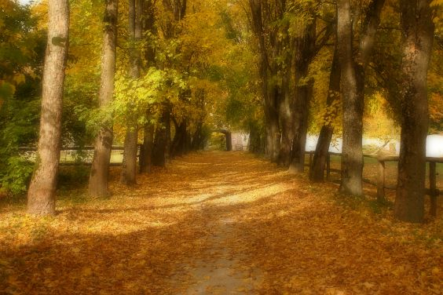

Beispiel für den Orton-Effekt „Herbstallee“
Falls ein richtig belichtetes Bild für den Orton-Effekt verwendet werden soll, kann auch im Normal-Modus mit der Deckkraft gearbeitet weren.Hier das Ausgangsbild:
 |
| Abb.
1: Richtig belichtetes Ausgangsbild für den Orton-Effekt |
Die Ebene wird dupliziert und mit dem Gaußschen Weichzeichner unscharf gemacht. Anschließend wird die Deckkraft auf einen Wert um die 50 gesetzt.
 |
| Abb.
2: Die Deckkraft der unscharfen Ebene wird reduziert |
Nach der Vereinigung erhalten wir ein Bild mit Orton-Effekt.
|  |
| Abb.
3: Bild mit Orton-Effekt |
© 2009-2017 Michael Roppel